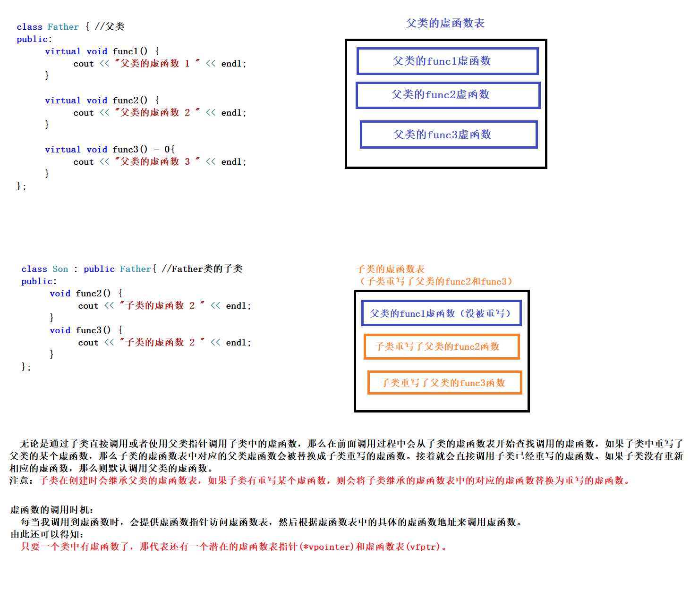

多态分为两类，一种是静态多态（如函数重载，运算符重载，复用函数名等）和 动态多态（派生类和虚函数实现运行时的多态）
静态多态和动态多态的区别是：静态多态的函数地址早绑定，在编译阶段就确定了函数地址。 动态多态的函数地址是晚绑定，即运行阶段确定函数地址。
多态的满足条件：有继承关系；子类中重写父类中的虚函数。
虚函数：在函数前面加上关键字 virtual 使得其变成虚函数，这样在编译阶段编译器就不能确定函数的调用了，要通过子类来进行调用，这样也满足了函数地址的晚绑定。
多态的使用：父类指针或引用指向子类对象。
例子：
**class father /*** 父类 */
{
public:
**virtual void show(){ /*** 函数加上 virtual 后就成为了虚函数 */
**cout<<”** 父类的调用”<<endl;
}
};
**class son : public father /*** 子类 */
{
public:
**void show(){ /*** 子类重新父类的虚函数 */
**cout<<”** 子类的调用”<<endl;
}
};
**void doshow(father & s){ /*** 传入什么对象就调用什么东西的函数 */
s.show();
}
void test(){
son s; doshow(s);
}
虚函数表和虚函数
父类中如果有虚函数，那么父类指针指向子类对象时，
如果子类重写了父类的虚函数，那么使用父类指针调用虚函数时，
会优先调用子类的虚函数。
假设父类有 func1,func2,func3 三个虚函数
如果子类重写了父类的 func2，func3 函数
然后使用父类指针分别调用以上三个函数，
那么父类虚函数中没有被重写的 func1 会调用父类自己的 func1，
func2 和 func3 会调用子类重写的 func2 和 func3
